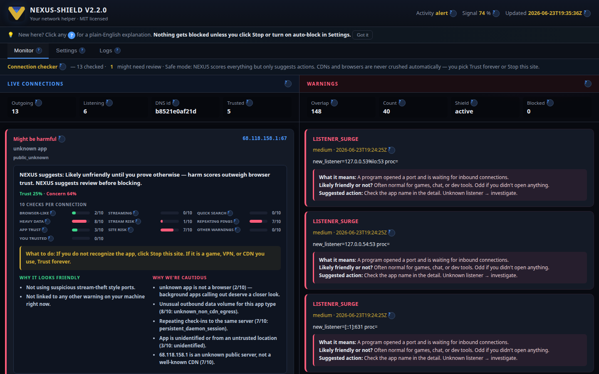

One admin approval installs the full field stack: daemon, panel, firewall, polkit, Tristate / Underlay F9, and desktop entries. Browser opens automatically on first boot.
From v10.4.0 release:
| Asset | Use |
|---|---|
nexus-shield-10.4.0-source.tar.gz | Full tree — recommended for install |
nexus-shield-10.4.0-installers.tar.gz | Scripts only — overlay into existing tree |
tar -xzf nexus-shield-10.4.0-source.tar.gz
cd nexus-shield-10.4.0
chmod +x install-all.sh genius_shield.sh nexus.sh nexus-install-gui.sh
sudo ./install-all.shThis runs genius_shield.sh which:
/usr/local/lib/nexus-shieldnexus-genius.service (systemd)| Action | Result |
|---|---|
Reboot or systemctl start nexus-genius | Panel on :9477, browser opens /field |
| Start menu → 2026 Tristate Installer | Opens /underlay-f9?sector=underlay |
nexus-install-gui.sh | Same Tristate URL in browser |
./nexus.sh (dev tree) | Field standalone panel + browser |

Permanent underlay installer — F9 hotkey in panel, no off switch after commit. GUI at:
http://127.0.0.1:9477/underlay-f9?sector=underlayLegacy path /tristate-installer redirects to the same surface.
nexus status
nexus verify
curl -s http://127.0.0.1:9477/api/status | jq .Full installer reference: INSTALL-README.md